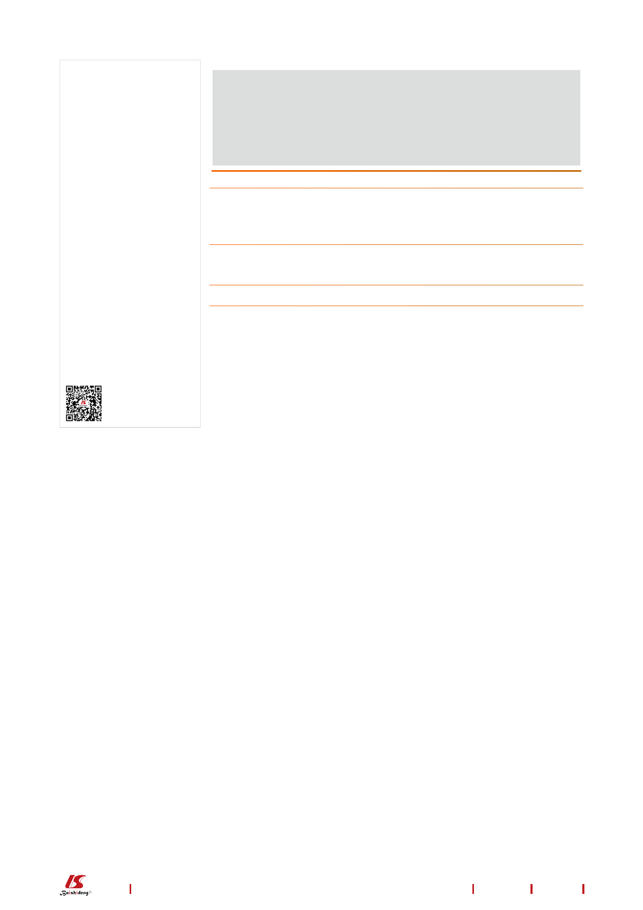

Choudhery MS et al. Conversion of iPSCs into iMSCs
NonCommercial (CC BY-NC 4.0)
license, which permits others to
distribute, remix, adapt, build
upon this work non-commercially,
and license their derivative works
on different terms, provided the
original work is properly cited and
the use is non-commercial. See: htt
p://creativecommons.org/License
s/by-nc/4.0/
Received: September 9, 2021
Peer-review started: September 9,
2021
First decision: October 17, 2021
Revised: October 25, 2021
Accepted: December 23, 2021
Article in press: December 23, 2021
Published online: January 26, 2022
P-Reviewer: Jiang W, Wahid M
S-Editor: Fan JR
L-Editor: Filipodia
P-Editor: Fan JR
explored in a number of preclinical and clinical studies for the treatment of various
diseases and disorders. However, factors such as low number of MSCs in donor
tissues, heterogeneity, limited in vitro proliferative potential and early senescence in in
vitro cultures restrict MSC use clinically. Novel methods to generate induced MSCs
from induced pluripotent stem cells have been explored. Development and optimi-
zation of such protocols is necessary to evaluate the regenerative potential of induced
MSCs in vivo and in vitro.
Citation: Choudhery MS, Mahmood R. Insight into generation of induced mesenchymal stem
cells from induced pluripotent cells. World J Stem Cells 2022; 14(1): 142-145
URL: https://www.wjgnet.com/1948-0210/full/v14/i1/142.htm
DOI: https://dx.doi.org/10.4252/wjsc.v14.i1.142
TO THE EDITOR
An interesting article was recently published by Dupuis and Oltra[1] in the “World
Journal of Stem Cells” about the generation of induced mesenchymal stem cells (iMSCs)
from induced pluripotent stem cells (iPSCs). The authors highlighted the importance
of production of iMSCs to overcome the problems related to primary MSCs derived
from adult tissues. In this regard, they summarized the protocols of iMSC generation
from iPSCs. In addition, they discussed the common and method-specific culture
components and materials required for iMSC generation. We appreciate the idea of
discussion of the current protocols for iMSC generation specifically dividing the
available protocols into categories such as MSC switch method, embryoid body
formation method, specific differentiation method, pathway inhibitor method and
platelet lysate method. However, certain points especially the terminology used, and
the information provided is arguable.
MSCs are one the best characterized types of adult stem cells. MSCs can be isolated
easily from various adult autologous tissues (such as adipose tissue, bone marrow, etc.
) as well as neonatal tissues (such as umbilical cord tissue, umbilical cord blood, etc.).
Due to their regenerative potential, MSCs are currently the focus of cell-based therapy
for various diseases and disorders. As a result, a significant number of clinical trials
have been registered using MSCs to evaluate their safety and efficacy for future
clinical use in myocardial infarction, stroke, meniscus injury, limb ischemia, graft-
versus-host disease, skin diseases and autoimmune disorders as well as for wound
healing and aesthetic applications (www.clinicaltrials.gov).
The factors such as low number of MSCs in adult tissues, age and donor-related
heterogeneity, limited proliferative potential and early senescence in in vitro cultures
restrict MSC use for research as well for clinical applications[2]. As a result, there has
been a great interest in generating MSCs from alternative sources. One such novel
alternative method is to generate MSCs (iMSCs) from iPSCs[3,4]. iPSCs are a well-
characterized source of pluripotent cells. iPSCs are derived by genetic reprogramming
of various types of adult somatic cells to an embryonic stem cell-like state. Forced
expression of pluripotent genes (such as OCT3/4, Sox2, Klf4, c-myc) convert somatic
cells into pluripotent cells. Theoretically, iPSCs have unlimited proliferative potential
and ability to differentiate into large numbers of tissues. The generation of iPSCs from
mouse fibroblasts was first reported by Takahashi and Yamanaka[5] in 2006. Later,
human iPSCs were independently generated by Takahashi et al[6] from human
fibroblasts[6]. iPSCs are an ideal source of cells for generation of patient specific cells
without any ethical and legal concern. Development and optimization of protocols to
generate iMSCs from iPSCs is important to overcome the problems associated with
primary MSCs isolated from adult tissues. In addition, it is necessary to evaluate
regenerative potential of iMSCs in vivo and in vitro before their clinical applications.
Careful investigation of the biological properties of iMSCs in vitro and their long term
behavior in animals is imperative for their translation from bench to bedside.
The manuscript by Dupuis and Oltra[1] used the term “adult pluripotent stem cells”
for MSCs, which is debatable and requires attention. MSCs are multipotent stem cells,
although very few studies have identified a subpopulation of very small embryonic-
like stem cells (pluripotent) in MSC cultures[7]. In addition, the use of the term
“multipotent” for iPSCs may be a typo error. Furthermore, the authors have frequently
WJSC https://www.wjgnet.com
143
January 26, 2022 Volume 14 Issue 1